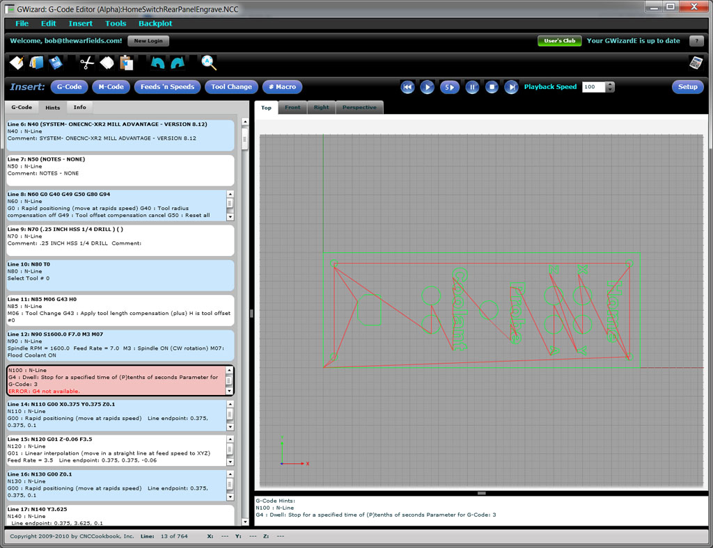

|
|
GW Editor User Guide
|
||||||||
|
G-Wizard Editor: Getting Started
Welcome to G-Wizard Editor! This page is designed to help you get started as quickly as possible using it. We'll assume you're all registered, installed, and wondering what the heck you need to do next. If you haven't yet registered, please do so here. Here are some resources we've put together to help you get started: - This "Getting Started" page will provide you with some helpful videos as well as a written tour of the product. Start here and at least watch the video down below. At the bottom of the page is a link to the next relevant documentation section to visit, or you can check out all the links to the left. - Visit G-Wizard University for GW Editor. This page is our collection of quick and helpful videos that cover various aspects of the product. - You'll want to hit the Setup page pretty soon to get GWE configured for your CNC machine and its controller. - How-To Articles: An index of our best How-To articles for G-Wizard Editor. - There are some sample g-code files to download and play with. - There is a G-Code Tutorial that has lots of G-Wizard Editor examples. - There are Quick References tables for the G-Codes - There's a Troubleshooting Page in case you're having install problems. - There's a Software Channel for Our Blog that has all the posts we've done about the software: lots of great tips and in-depth how-to's. - We encourage you to subscribe to the Blog e-mail newsletter so you can see a post any time there's something new or important to know about G-Wizard Editor. - When all else fails, there's a Customer Portal where you can log support tickets, search our Knowledge Base, and make or vote on suggestions for future product features. Now here's the good news: you've got all those resources in your back pocket if you need them, but GWE is actually pretty simple. You don't need all that just to get started. Go through this "Getting Started" page. Watch the video. That'll get you the basics. Then run through the Setup page and get GWE configured for your machine. Feel free to try winging it too if you're the sort that doesn't like to crack open the Instructions. You can always come back here by pressing the "Getting Started" button on GWE.
Video: Getting Started Tour
The G-Wizard Editor Getting Started Tour... For a more in-depth video tour and demonstration, download the latest webinar on G-Wizard Editor from our Webinar page. The recorded webinars are at the bottom of the page. Bubble Tips Bubble Tips are there to give you a guided tour right inside the product. They begin with a popup Start Wizard that tells you how to use Bubble Tips. Go through all the Bubble Tips to checkout the different parts of GWE interactively.
Screen Layout
The different elements of GWE are called out in the screen shot above: - Menus: Just what you'd expect. Tools is where you go for various transformations on the g-code, Backplot for special options on the graphical backplot, and Insert gives you menu equivalents for the Insert buttons on the G-Code tools. The File and Edit menus are standard fare. Many of the menu choices are not working yet and keyword shortcuts are scarce. - Login Bar: This is the same component found in the G-Wizard Calculator. In fact, where possible, I am sharing components, which makes everything simpler because you learn how they work once and can use the functionality in all the products. - Tool Bar: This is the standard sort of tools. I will likely add some less standard ones over time as the G-Code Tool Bar is nearly full with insert and simulator functionality. - Views: There are a number of different kinds of Views that are accessible from these two tab clusters. The views on the right are different perspectives from which to view the backplot. On the left are different views of the G-Code Program. There is the text itself, under "G-Code", the Hints, and an overall Info view. More on each one below. - Line Gutter: This is an important tool for providing concise additional information about each line, as well as to tell you what the overall line number is. - Status Bar: A few bits of incidental information such as the Line Number (in case you're looking at some view other than the G-Code), and the cursor coordinates when it is over the Backplot. Let's look at these different regions in a little more detail below. Menus Most of the menu choices are pretty standard and need no explanation. I'll list them and only annotate those that are more unique to GWE: Here is a quick summary of all the menu choices: File Menu - New - Open - Save - Save As - Exit - History List
Edit Menu - Undo - Redo - Cut - Copy - Paste - Select All - Find/Replace - Jump Find/Replace and Jump create special Toolbar menus so they're not hanging out on top of the screen hiding what you're trying to find or jump to. Use Find/Replace to do traditional Find/Replace style operations. Use Jump to move to the next tool change and perform similar operations.
Insert Menu - G-Code - M-Code - Feeds and Speeds - Tool Change - # Macro - Custom Cycle - Insert File - Append File Most of these choices pop up special Wizards to help you enter g-codes. In addition, you can either insert a file at the current cursor location or append a file to the end of the currently loaded file.
Simulator Menu - Cycle Start - 5 Step - Single Block - Stop - Rewind - Feedhold - Options Start the Simulator with Rewind. You'll see the additional debug information window appear below the backplot. Use Cycle Start to get the Simulator running. We tend to use the words "Simulator" and "Debugger" almost interchangeably here.
Tools Menu - Revise - Auto Revise - Last Revision - Revision History - Options - Setup Revisions are commands that revise your G-Code. There are a lot of them that do all sorts of useful things that can save you a lot of time. Go ahead and pop open the "Revise" choice to take a look at the list.
Backplot Menu - Zoom Extents - Zoom In - Zoom Out - Options You have full control of the Backplot here.
G-Code Tools There are three button clusters that make up the G-Code Tools ribbon:
Line Gutter Beyond showing you the line numbers, the Line Gutter provides a couple of other kinds of interesting information:
Lines that have errors are highlighted in Red, so you can scan down the gutter and find them quickly... Let your mouse cursor hover over a line, and a Tool Tip pops up giving you the Hint for the line. In this case, we can see quite a lot of info about Line 0013, including the fact that the Error is that G4 (Dwell) is not available. That just means GWE doesn't know what to do with it yet.
G-Code View G-Code view is just a basic text editor. No surprises here!
Hints and Errors Views  Hints View shows you a quick explanation of what the g-code does... Hints View shows you a quick explanation of what the g-code on each line does. It's a great learning tool, as well as a way to see some deeper information about what's going on. Doesn't everyone learn to read G-Code pretty quickly? Sure, reading something like "G0 X0Y0" is pretty easy. But, what about that canned cycle you use once in a blue moon. What exactly where it's arguments again? With Hints View, you can be reminded instantly what's going on. Note that the Hint where the cursor in the G-Code view is gets a heavy black outline. If you're running the g-code simulator, you can leave Hints View up and the outline tells you which line is currently executing too. Most lines are alternating blue and white background, but if GWE finds an error on the line, the hint for that line will have a pinkish background. The error text within the hint will be called out in bright red. This makes it easier to scan through and find your errors quickly. The Errors View is a version of Hints that only shows lines with Errors. This makes it easy to zero in on the Errors and fix them.
Tools View The Tools View (accessed via the "Tools" tab), collects information from your g-code program about what tools are used and where the Tool Changes occur:
The Tools View... The Tools View lets you do the following: - See a list of all the Tool Changes in your program. Double click any tool change to go directly to that line. - See a list of the Tools used in your program. Double click any entry to go to the first use of the tool in the g-code. - See the comment associated with a tool, which may help identify which tool it is. - See which length or tool radius compensation is in use for the tool. - Map the tool to tools in the Tool Crib. This is useful when working with Feeds and Speeds. This is done by selecting a crib with the dropdown, and then picking which mapping style should be used. Mapping can be accomplished by matching slots numbers (i.e. the "T" # must match the crib slot #) or by matching the tool comment to the crib's tool description. The latter is very flexible when tools can move around to different slots in the changer. - Create a new Tool Crib table that corresponds to the tools used in the g-code program by pushing the "Gen Crib" button. For more on the Tools View, visit the GWE Tool Data Management page.
Info View Info View gives quick summary information about your G-Code program... Info View gives quick summary information about your G-Code program: - What are the maximum extents (travels) of the various axes? In the screen shot, the X-axis stays in the range from 0 to 11 inches. - What ranges of spindle rpms and feedrates are used? In the example, the spindle runs at 1600 rpm the whole program, and the feedrate ranges from 3.5 to 7 IPM. - The Code Types pane breaks down how many of each kind of code are encoded in the program. This program has 2 errors (we saw one up above), 185 G-codes of all kinds, 13 M-codes, 1241 XYZ moves of which the shortest was 0 distance (hmmm, have to look at that one), 858 arcs specified by IJK and no arcs specified with R (radius), and so on.
What to Read Next? Now that you're familiar with how the screen works, it's time to customize your GWE so it understands the g-code dialect of your CNC controller. That's done in the Setup Page.
|
||||||||
|
|
|
|
|
|
|
||
|
|
|
|||||||